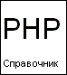

Книги по PHP

Формат файла: Файл CHM
Язык: Русский/Английский
Язык: Русский/Английский

4.67M
Книги >>> Книги по PHP
Книги по PHP |
||
| Руководство по PHP | ||
|
 |
Это руководство состоит, главным образом, из справочника функций, а также содержит справочник языка, комментарии к наиболее важным из отличительных особенностей PHP, и другие дополнительные сведения.
Формат файла: Файл CHM
Язык: Русский/Английский |
4.67M |